1 · Clinical Reasoning, Documentation & the Encounter
Instructional Objectives
Topic Outline: Application of Clinical Reasoning and Problem-Solving Abilities and Effective Exchange of Information
- Describe the format and components of a comprehensive patient history and physical examination to enhance clinical reasoning.
- Describe the role of small groups and simulations in fostering clinical reasoning and problem-solving skills.
- Discuss the application of clinical reasoning in crafting oral presentations that accurately reflect patient care scenarios.
- Discuss the importance of clinical reasoning during an Objective Structured Clinical Examination (OSCE).
- Differentiate between a comprehensive and focused patient history and physical examination.
- Differentiate between the documentation of a complete history and physical examination and a problem-focused subjective-objective assessment and plan (SOAP).
- Demonstrate documentation of a complete history and physical examination.
- Explain the importance in involving the patient in healthcare communication.
1.1 · Objective a — Format and components of the comprehensive history and physical
A comprehensive history and physical is the full record of an encounter, taken in a fixed order so that nothing is lost and so that anyone reading it later finds each piece where they expect it. The components, in the order they are gathered and written:
| Component | What it holds |
|---|---|
| Chief complaint | Why the patient came, in their own words where possible |
| History of present illness | The narrative of the current problem, built from the seven attributes of a symptom |
| Past medical history | Previous illnesses, hospitalisations, surgery |
| Medications and allergies | Prescription and over-the-counter, with the reaction for each allergy |
| Family history | Heritable disease in first-degree relatives |
| Social history | Habits, occupation, exposures, living situation |
| Review of systems | System-by-system screening for symptoms not yet volunteered |
| Physical examination | What you found, described rather than labelled |
| Assessment and plan | Differential, working diagnosis, testing, treatment, education, follow-up |
1.2 · Objectives b & d — Small groups, simulation and the Objective Structured Clinical Examination
These three formats all exist to make you reason out loud, which is the one thing reading cannot teach.
| Format | What it trains |
|---|---|
| Small groups | Justifying every information request. You must explain why a piece of information is needed and what it would tell you about the patient — the facilitator withholds it until you do. That constraint is deliberate, and it is the whole exercise: it converts “order a complete blood count” into a hypothesis with a reason attached. |
| Simulation | Reasoning against a moving target. Vitals are monitored live, laboratory and imaging results arrive during the scenario, and the plan has to change as the mannequin changes. A debriefing with reflection and feedback closes each session. |
| Objective Structured Clinical Examination | The whole chain end to end and under time: focused history, focused examination, differentials, studies, diagnosis, treatment plan with patient education, and a one-minute case presentation. |
1.3 · Objective c — The oral case presentation
A presentation is a well-organised vignette that describes the patient and the clinical problem — not the written note read aloud. The provider's goal is to help the listeners visualise the patient and understand the problem.
| Element | Rule |
|---|---|
| Opening statement | Include the past medical history and the chief complaint |
| Content | Pertinent positives and negatives, from both the history and the physical examination |
| Order | Mostly the order in which you obtained the history and performed the examination |
| Delivery | Try not to read your notes |
1.4 · Objective e — Comprehensive versus focused
The distinction that matters, and the one most often got wrong: a focused encounter narrows both the history and the examination. It is not a comprehensive encounter written up more briefly, and it is not a full history with a short examination.
| Comprehensive | Focused | |
|---|---|---|
| History of present illness | Full | Focused |
| Review of systems | Complete, system by system | Focused |
| Past medical history | Full | Focused |
| Social history | Full | Focused |
| Family history, medications, allergies | Full | Focused |
| Physical examination | Head to toe | Systems pertinent to the complaint |
A focused encounter still has to produce the whole reasoning chain: differentials, laboratory and imaging studies, a diagnosis, and a treatment plan including patient education. Narrowing the data gathered does not narrow what you are expected to conclude from it.
1.5 · Objective f — The complete history and physical versus the SOAP note
Both document an encounter. They differ in scope and in purpose.
| Complete history and physical | SOAP note | |
|---|---|---|
| Scope | Comprehensive — the entire history and a head-to-toe examination | Problem-focused |
| When used | New patient, admission, annual comprehensive visit | A visit addressing a defined problem, and follow-up |
| Structure | Chief complaint, history of present illness, past medical history, medications, allergies, family history, social history, review of systems, examination, assessment, plan | Subjective, Objective, Assessment, Plan |
| Examination | All systems | Focused, but always with a general assessment or impression |
| SOAP section | Shorthand | What goes in it |
|---|---|---|
| Subjective | What the patient said | Narrative history, pertinent positives and negatives, medical and surgical history, family and social history, review of systems, medications, allergies |
| Objective | What you found | Observations, measurements and tests performed during the encounter; the focused examination; always a general assessment or impression |
| Assessment | What you concluded | The diagnosis drawn from history, examination and testing, plus chronic and concurrent conditions |
| Plan | What you will do | Disposition, testing, treatment, referrals, patient education, follow-up |
1.6 · Objective g — Documenting the complete history and physical
The rules that get marked against you, taken from the clinical assignment guidance:
| Rule | Why it exists |
|---|---|
| Describe findings rather than writing normal, abnormal or unremarkable | A description communicates what you actually observed; a label communicates only that you formed an opinion |
| No abbreviations | Stated without qualification — there is no “once defined on first use” allowance |
| Keep subjective and objective information in their own sections | Blending them is one of the commonest documentation errors, and it hides which claims are the patient's and which are yours |
| If you did not do something, document why | You may not invent a finding. This is the one rule treated as absolute |
| You may not write your note with another student | Even when you saw the same patient, the note is your own work |
| Review the grading rubric and the comments on prior assignments before submitting | Prior feedback is the most direct guide to what still needs fixing |
1.7 · Objective h — Involving the patient in healthcare communication
Communication is a skill that is graded, and it is expected to adapt in style and content for each patient rather than follow one fixed script.
A related expectation: accept constructive feedback and modify behaviour, and expect different facilitators to give different feedback. The variation is anticipated rather than a contradiction to be resolved.
2 · Dermatological History & Examination
Instructional Objectives
Topic Outline: Advanced Dermatological System Medical History and Examination
- Review the anatomical structure and function of the skin.
- Review the terms used to describe lesion type (primary morphology), lesion configuration (secondary morphology), texture, distribution, and color of skin lesions.
- Describe the elements related to interviewing and eliciting a medical history that aid in identifying skin, hair, and nail disorders.
- Describe physical examination findings of abnormal conditions related to skin, hair, and nails.
- Demonstrate the proper clinical skills for a complete and focused physical examination of the skin.
2.1 · Objective a — Structure and function of the skin
Five functions: protection of internal structures · prevention of entry of microorganisms · temperature regulation · excretion · production of vitamin D.
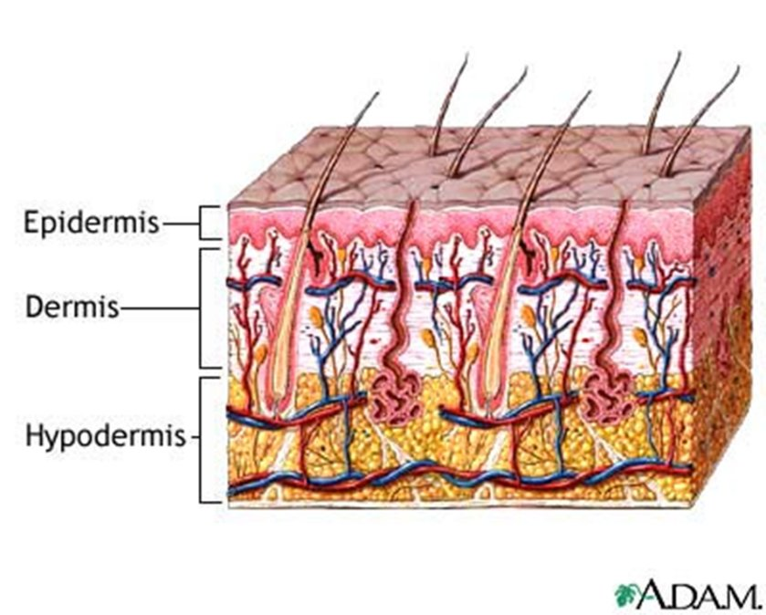
| Gland | Secretes | Notes |
|---|---|---|
| Sudoriferous (eccrine) | Sweat | Maintains body temperature |
| Apocrine | Pheromones | Becomes active during puberty |
| Sebaceous | Sebum | Surrounds the hair follicle; keeps hair and skin moist |
| Hair type | Character | Where |
|---|---|---|
| Vellus | Short, fine | Covers the body |
| Terminal | Coarse | Scalp, pubic, axillary, beard |
2.2 · Objective b — The descriptive vocabulary
This vocabulary is the backbone, not a glossary to skim. “This is what’s very important … this is going to be really important for every system that you learn within physical exam lab and physical exam lectures. These are going to be the backbone of how you write your notes and how you communicate to other providers.”
She is saying this section outlives dermatology — it is how you will describe findings in every organ system for the rest of the course.
Five features describe any lesion: distribution (location) · configuration (shape) · morphology (form and structure) · colour · texture.
Distribution — unilateral, bilateral, symmetric, asymmetric, photodistribution, intertriginous, flexural, extensor, palmar-plantar, hair-bearing areas. Distribution is often the fastest route to a diagnosis:
| Distribution | Suggests |
|---|---|
| Generalised or diffuse | Allergic reactions |
| Regional (confined to one body area) | Tinea capitis |
| Sun-exposed (photodistribution) | Skin cancers |
| Dermatome | Herpes zoster |
| Extensor | Psoriasis |
| Flexor | Intertrigo |
| Intertriginous (creases and folds) | Involvement of skin folds |
Configuration — the shape the lesions make together:
| Term | Meaning |
|---|---|
| Annular | Shaped like a ring; round |
| Arciform | Forms arcs or curves |
| Confluent | Lesions run together |
| Discrete | Lesions remain separate |
| Grouped | A cluster of lesions |
| Gyrate | Twisted, coiled, spiral, snakelike |
| Herpetiform | Grouped papules or vesicles arranged as in herpes simplex |
| Iris (target) | Shaped like a bull's eye |
| Linear | Forms a line or stripe |
| Reticular | Lacy or networked pattern |
| Serpiginous | Snake-like |
| Zosteriform | Clustered in a dermatomal distribution, as in herpes zoster |
2.3 · Objective b — Primary morphology
Beck uses ONE CENTIMETRE as the macule/patch boundary. “A macule is less than one centimeter, it is a flat discoloration — that’s important. A patch is going to be a flat discoloration that’s more than one centimeter. Okay? That’s important.”
Clinical Pathophysiology teaches five millimetres for the same lesions, and Professor Gopal said her numbers are the ones her exam uses. Both lectures ran on 2026-08-18, three hours apart. Neither is wrong — they are different conventions, and each course examines its own. Use one centimetre here and five millimetres there.
Neither of them will ask a borderline case. Beck: “My exam question is not going to involve this … I’m not going to ask you ‘it’s point seven five centimetres’ … so it’s going to be very clear.” Gopal, the same day: “it’s not gonna be a gotcha thing on the exam.” Know the numbers — they are fair game. What neither of them will do is make a borderline value the crux of the question, so you will not be asked to call a 0.75 cm lesion. Learn the boundaries; do not agonise over the edge cases.
A primary lesion forms first and results directly from the disease. Identifying it is the key to interpretation and description — every later description depends on getting this right.
| Lesion | Definition | Size | Example |
|---|---|---|---|
| Macule | Circumscribed, flat discoloration — brown, blue, red or hypopigmented | < 1 cm | Freckles |
| Patch | Circumscribed, flat discoloration; a large macule, or macules that coalesce | > 1 cm | Vitiligo, café au lait spots |
| Papule | Palpable, elevated solid mass | < 1 cm | Nevi, warts, lichen planus |
| Plaque | Palpable, elevated solid mass, plateau-like; elevated, flat-topped, firm, rough; occupies a large area compared with its elevation; may be coalesced papules | > 1 cm | Psoriasis |
| Nodule | Elevated, firm, circumscribed; round or ellipsoid; deeper in the dermis than a papule | 1–2 cm (Bates says larger than 0.5 cm) | Basal cell carcinoma, neurofibromatosis |
| Tumor | Palpable, elevated solid mass | > 2 cm | Neoplasms |
| Wheal | Elevated irregular-shaped area of cutaneous edema; solid, transient | Variable | Allergic reaction |
| Vesicle | Superficial elevation filled with fluid | < 1 cm | Blister, herpes simplex |
| Bulla | Superficial elevation filled with fluid | > 1 cm | Large blister |
| Pustule | Superficial elevation filled with purulent material | Usually < 1 cm | Acne, impetigo |
| Cyst | Elevated, circumscribed, encapsulated; in the dermis or subcutaneous layer; liquid or semisolid contents | — | Sebaceous cyst |
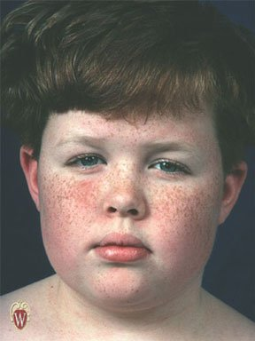
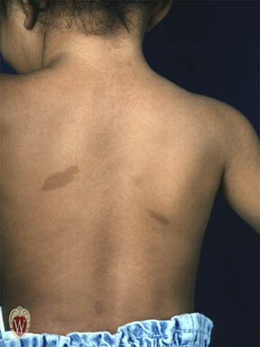
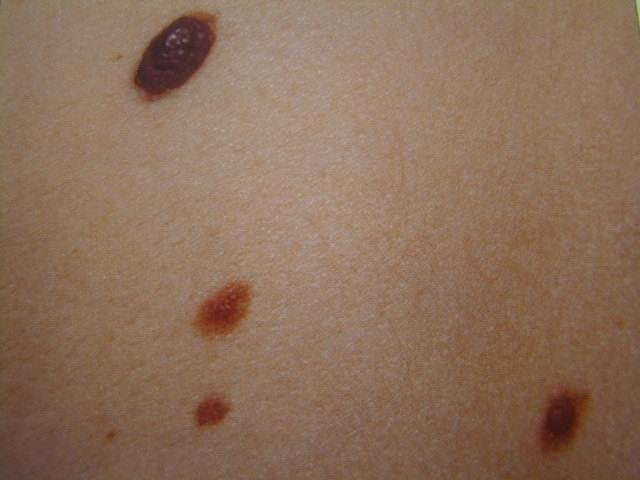
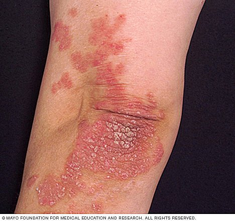
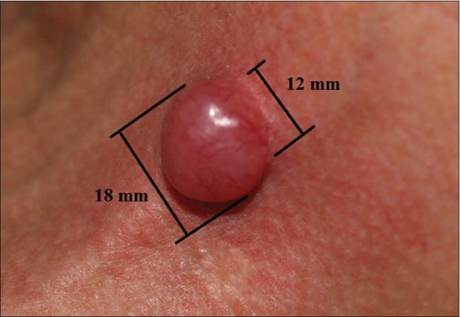
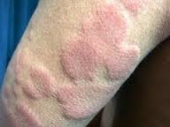
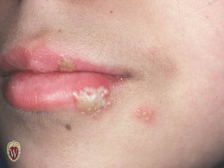
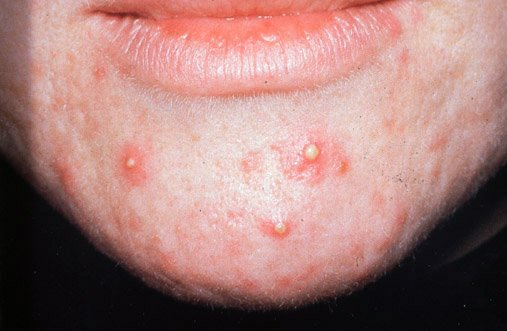
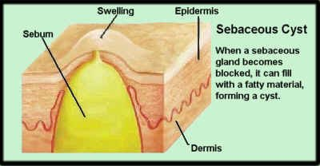
2.4 · Objective b — Secondary morphology
A secondary lesion is a change in a primary lesion over time — from disease progression, from treatment, or from manipulation such as picking or scratching. That third cause is worth holding on to: the patient's own hands change the examination.
| Lesion | Definition | Example |
|---|---|---|
| Crust | Collection of cellular debris, dried serum and blood — a scab. The antecedent primary lesion is usually a vesicle, bulla or pustule | — |
| Erosion | Loss of superficial epidermis, does not involve dermis; surface is moist but does not bleed | The moist area after a bulla or vesicle ruptures |
| Ulcer | Deeper loss of epidermis and/or dermis; may bleed and scar | Stasis ulcer of venous insufficiency |
| Fissure | Linear crack in skin | Athlete's foot |
| Scale | Thin flake of exfoliated epidermis | Dandruff, cradle cap |
| Excoriation | An abrasion or scratch mark; may be linear or rounded | Scratched insect bite |
| Scar (cicatrix) | Replacement of destroyed tissue by fibrous tissue. Thick and pink (hypertrophic) or thin and white (atrophic); does not extend beyond the injured area | — |
| Keloid | Scar that grows beyond the wound | — |
| Lichenification | Thickening with skin line accentuation; roughening and thickening of epidermis; caused by chronic irritation | Atopic dermatitis |
| Collarette scale | Fine scale, peripherally attached and centrally detached, on the edge of an inflammatory lesion | Pityriasis rosea |
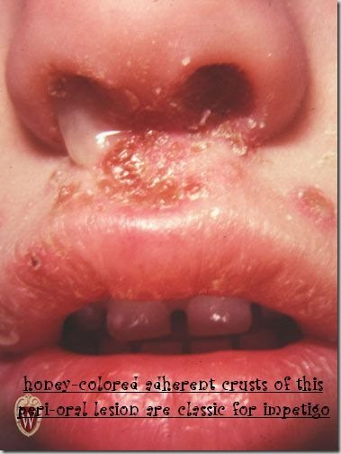
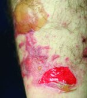
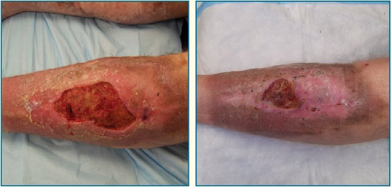
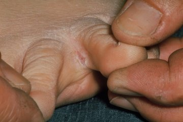
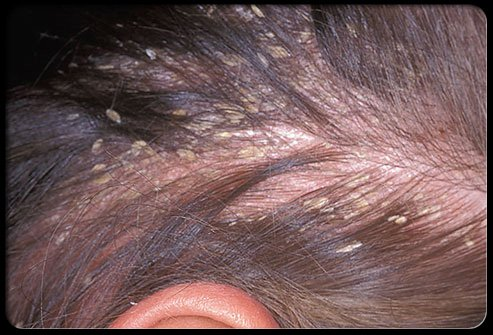
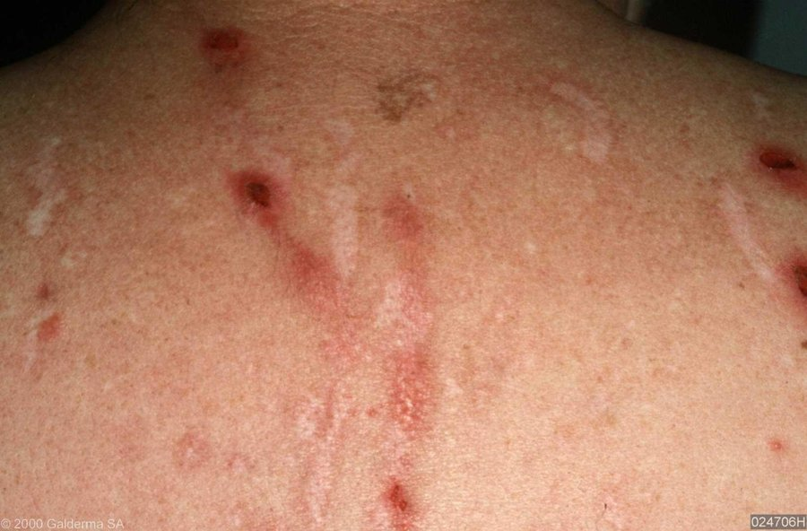
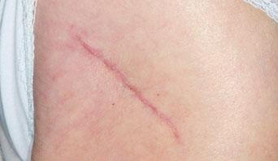
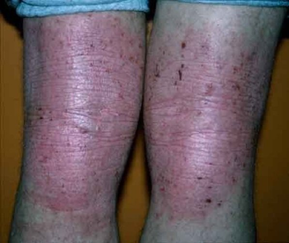
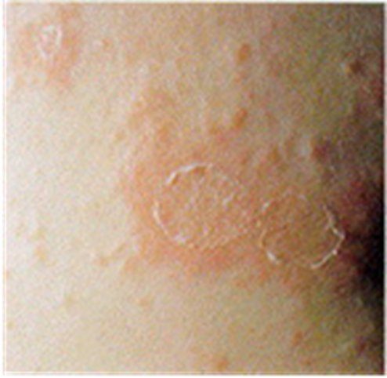
| Also worth knowing | Detail |
|---|---|
| Verrucae (warts) | Caused by human papillomavirus. Small harmless tumors of the skin; grey to flesh coloured nodules raised from the surface, sometimes with rough hornlike projections |
| Corn | Smaller than a callus; usually over a non-weight-bearing area of the foot; conical structure of keratin pointing toward the dermis |
| Callus | Thickening of epidermal keratin; usually on the sole of the foot, at the ball or heel |
2.5 · Objective c — The dermatological history
The five core questions: where did the problem first appear · what did it look like · how has it progressed or changed · any associated symptoms · what treatment has been tried.
| Area | What to ask |
|---|---|
| Existing skin abnormalities | Changes in colour · changes in shape (border, elevation, diameter) · changes in size · pain · bleeds easily · non-healing areas |
| Onset | Duration; acute versus chronic |
| Relationships | Season, travel history, heat or cold, previous reactions, drugs, menses |
| Skin symptoms | Pruritus, pain, paresthesia |
| Past medical history | Previous problems; systemic disease; personal dermatology history including disease and surgery |
| Family history | Skin cancer, psoriasis, allergies, infestations, infections |
| Psychosocial | Personal habits, exposures. Psychological stress is seldom the sole cause but can exacerbate many dermatoses |
2.6 · Objective d — Abnormal findings: the skin
The pressure ulcer stages. “These are very important. You’re gonna come across it.” She then walked stage one in full — intact skin, erythema that fails to blanch, and the four changes: temperature (warmth or coolness), consistency (firm or boggy), sensation (pain or itching), and colour.
The melanoma letters. “Things to look out for and to remember … you wanna remember the A, B, C, Ds … that’s really important.” She stopped and taught them from scratch when the class had not met them before.
Vascular lesions. The single manoeuvre that sorts them is diascopy: press a piece of clear glass or plastic against the skin and look at the lesion under pressure. If the colour fades, there is vascular engorgement; if it does not fade, it is hemorrhage in the skin.
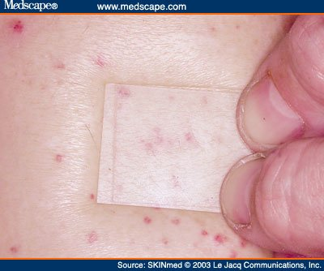
| Lesion | Appearance | Size | Blanches? |
|---|---|---|---|
| Petechiae | Reddish-purple macules | < 3 mm | No |
| Purpura | Reddish-purple macules | 3 mm – 1 cm | No |
| Ecchymosis | Purple or purplish-blue macules, fade over time | > 1 cm | No |
| Cherry angioma (Campbell De Morgan spots) | Dome shaped, bright red to violet or black | — | Sometimes |
| Telangiectasia | Fine, irregular blood vessels | — | Yes |
| Spider angioma | Central red macule with radiating spider-like arms | — | Yes |
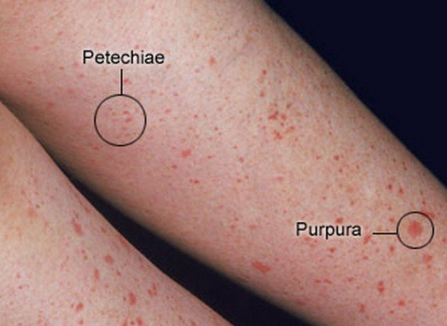
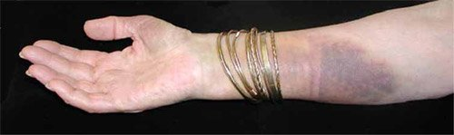
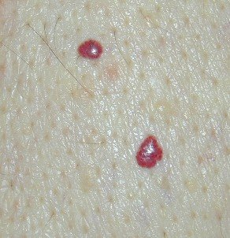
Dermatographism — “writing on skin”, an urticarial type allergic reaction. Firm stroking produces the triple response of Lewis:
| Step | What appears | Mechanism |
|---|---|---|
| 1 | Initial red line | Capillary dilatation |
| 2 | Reflex flare with broadening erythema | Arteriolar dilatation |
| 3 | Formation of a linear wheal | Transudation of fluid, that is, edema |
Decubitus (pressure) ulcers. Staged by depth:
| Stage | Finding |
|---|---|
| I | Alteration of intact skin: erythema that fails to blanch with pressure, plus change in temperature (warmth or coolness), consistency (firm or boggy), sensation (pain or itching), and colour |
| II | Partial thickness skin loss involving epidermis, dermis or both |
| III | Full thickness skin loss; necrosis of subcutaneous tissue; may extend to but not through underlying muscle |
| IV | Full thickness skin loss; destruction of tissue, muscle and/or bone |
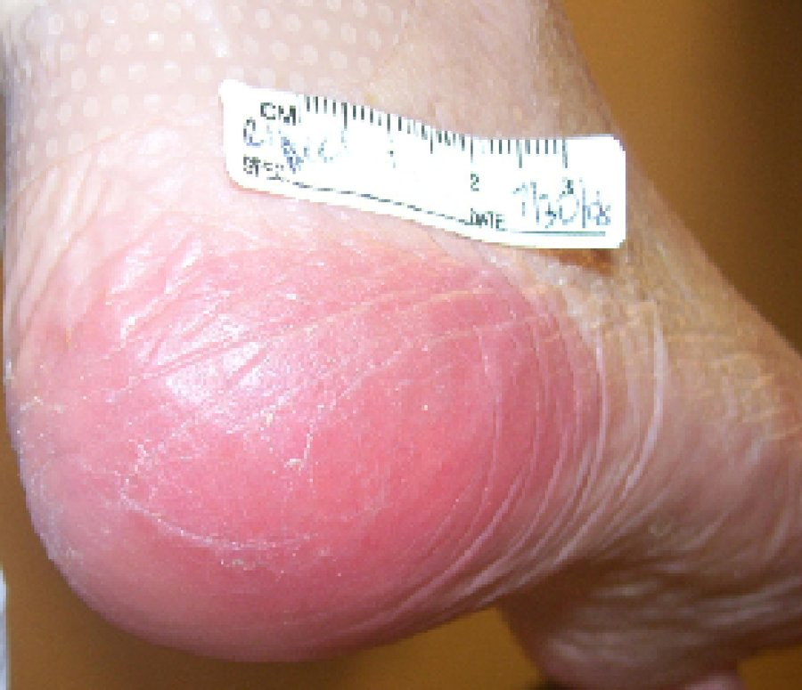
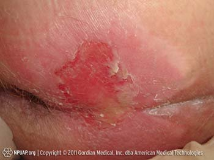
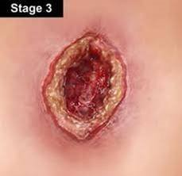
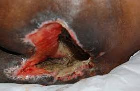
Tinea infections, named by site: corporis (body) · pedis (foot) · barbae (beard) · cruris (groin) · capitis (scalp) · unguium (nails).
| Infection | Appearance |
|---|---|
| Tinea pedis | Dry, scaling, or macerated fissuring of the interdigital spaces of the feet |
| Tinea corporis | Scaling, sharply demarcated round plaques with central clearing |
| Tinea capitis | Round scaling patches of alopecia with hairs broken off close to the scalp |
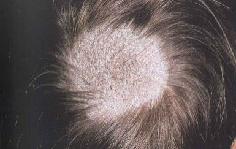
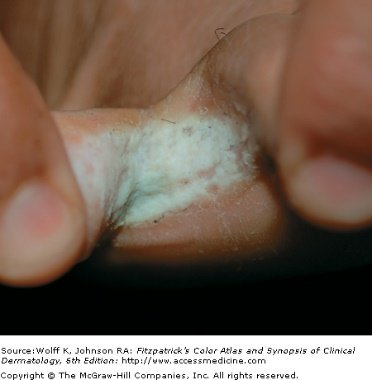
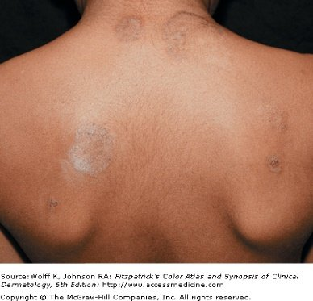
Malignancies of the skin.
| Malignancy | Common site | Appearance |
|---|---|---|
| Basal cell carcinoma | Face | Translucent, pearly nodule with a depressed center and raised borders; may ulcerate. A non-healing ulcer is the other presentation |
| Squamous cell carcinoma | Face and other sun-exposed areas | Red scaling, crusting nodule or plaque that can ulcerate and bleed |
| Malignant melanoma | Changing nevi | Irregularly coloured plaque with sharp notches and variation of pigment |
| Kaposi's sarcoma | Widely disseminated — legs, trunk, arms, neck, head | Starts as light coloured lesions that coalesce into darker ones; dark blue-purple macules, papules, nodules and plaques. The most frequent neoplasm in patients with acquired immunodeficiency syndrome |
| Letter | Melanoma warning sign |
|---|---|
| A | Asymmetry or shape |
| B | Border irregularity |
| C | Colour variation |
| D | Diameter larger than 6 mm |
| E | Evolving, elevation |
| F | Family history |
| G | Growing |
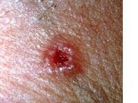
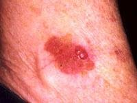
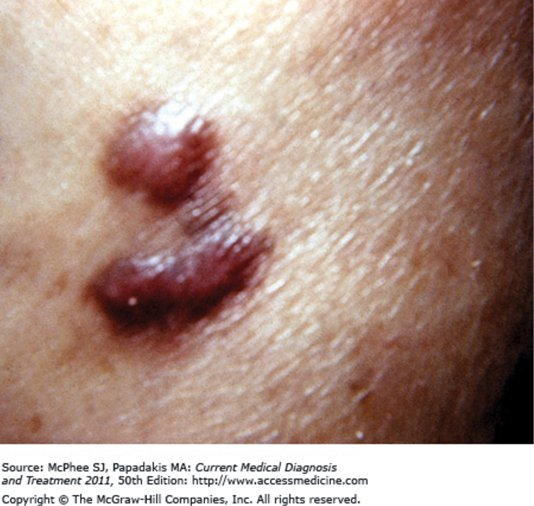
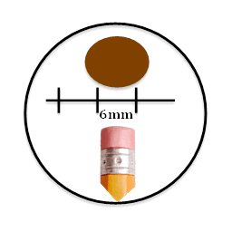
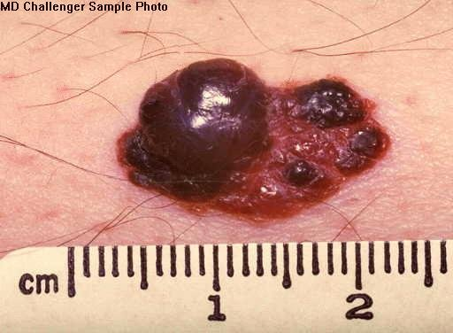
2.7 · Objective d — Abnormal findings: hair and nails
Exclamation point hairs in alopecia areata. “Hair loss in multiple round patchy areas, and this is important — you’ll see exclamation point hairs. Those are like a few follicles that are still trying … that should trigger in your mind, oh okay, alopecia areata, we gotta jump on this.”
| Hair disorder | Findings |
|---|---|
| Alopecia | Diffuse, patchy or total hair loss. Note the distribution on inspection — that is what separates the causes |
| Androgenic alopecia | Male pattern baldness |
| Alopecia areata | Chronic inflammatory disease of hair follicles, associated with autoimmune disorders. Hair loss in multiple round patches, with “exclamation point” hairs |
| Trichotillomania | Caused by an urge to pull out hair, producing bald patches. Single or multiple; from a few square centimetres to the entire scalp |
| Hirsutism | Increased hair growth in women, in a male pattern of distribution |
| Lice | Tiny white ovoid granules — nits — adherent to hairs. A magnifying glass aids inspection |
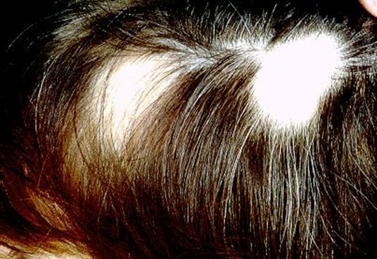
Nails. Inspect for shape, size, colour, brittleness, hemorrhages, lines and grooves, clubbing, and pitting.
| Finding | Description | Points toward |
|---|---|---|
| Koilonychia | Spoon-shaped concave nails; the nail plate thins and becomes inverted | — |
| Onycholysis | Painless separation of nail plate from nail bed, starting distally; several or all nails usually affected | Local irritation (chemical exposure, prolonged immersion in water), fungal infection, psoriasis, medications such as tetracycline, trauma |
| Nail pitting | Dystrophy of the nail plate; areas of small depressions or “pits” | — |
| Terry's nails | Proximal portion white, distal portion dark | — |
| Green nail | — | Pseudomonas infection |
| Brown–black nail | — | Melanoma |
| Subungual hematoma | Hemorrhage to the nail plate | — |
| Splinter hemorrhages | Hemorrhage of the distal capillary loop | — |
| Beau's lines | Transverse depressions | Halfway up the nail suggests an illness about 3 months ago |
| Mee's lines | Transverse lines | — |
| Clubbing | Angle between nail base and finger greater than 180°; end of finger becomes rounded and bulbous | — |
| Paronychia | Soft tissue infection around the nail, at the cuticle or nail fold. Acute: painful and purulent. Also occurs in chronic form | — |
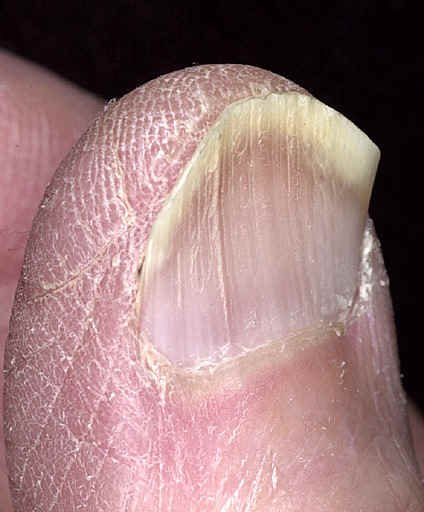
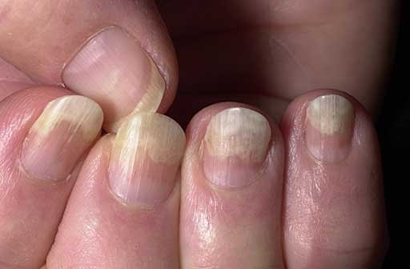
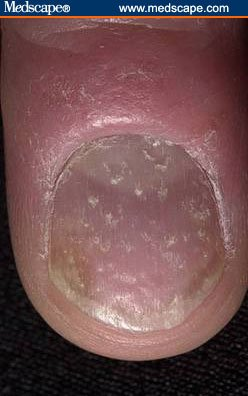
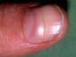
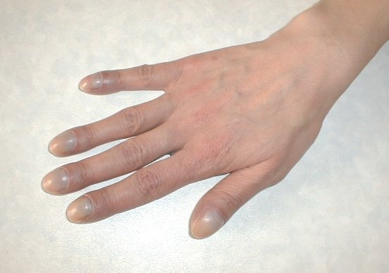
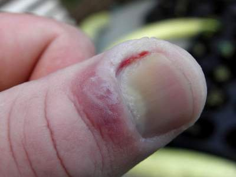
2.8 · Objective e — Performing the examination
Clinical pearls are context, not exam material. After explaining that shingles on the tip of the nose is a medical emergency because that dermatome carries the optic nerve, she drew the line explicitly: “I’m not going to test you on that — the testing is on this kind of stuff — but I’m just trying to give you the clinical level.”
“This kind of stuff” is the descriptive terminology and the examination itself. She added the pearl is worth knowing anyway because she believes it recurs on board exams — so learn it for practice, not for this exam.
The four principles are inspection, palpation, percussion and auscultation. That order holds for every body system except the abdominal examination, and some systems do not use all four.
| Set-up | Detail |
|---|---|
| Equipment | Ruler · light source · magnifying lens · gloves for any open lesions |
| Patient | In a gown — so that hair, anterior and posterior body surfaces, palms and soles, nails and interdigital spaces can all be inspected |
| Light | Inspect the entire skin surface in good light, preferably natural light or artificial light that resembles it. Artificial light may distort skin tone |
Six characteristics are assessed by inspection, palpation, or both:
| Characteristic | Descriptive terms |
|---|---|
| Colour | Increase or decrease in pigmentation · erythema/rubor · pallor · jaundice · cyanosis |
| Moisture | Dryness · sweating · oiliness |
| Temperature | Warmth · coolness — use the dorsal aspect of the hands |
| Texture | Roughness · smoothness |
| Mobility and turgor | See below |
| Lesions | Distribution, configuration, morphology, colour, texture |
| Normal | Abnormal | |
|---|---|---|
| Mobility | Skin lifts up with ease | Edema — reduced skin mobility |
| Turgor | Skin quickly resumes its shape | Dehydration — skin remains elevated |
Hair and scalp. Inspect colour, distribution and quantity; palpate for texture. Separate the hair into sections to observe the scalp, and inspect behind the ears and the occiput. The scalp should be clean, with no lesions, discolorations, flaking or parasites.
3 · Advanced Ocular Medical History and Examination
Instructional Objectives
Advanced Ocular Medical History and Examination
- Review the anatomical landmarks of the normal eye.
- Identify the anatomical landmarks of the normal eye.
- Demonstrate proficiency in performing a complete ocular examination.
- Define the elements in the medical history that aid in identifying ocular disorders.
- Define the elements of the physical examination that aid in identifying abnormal conditions of the eye.
- Identify specific symptoms related to abnormal conditions of the eye including the eyelids, sclera, cornea, and iris.
- Describe and identify expected visual exam findings when lesions along the visual pathway are present.
- Describe physical exam findings in non-visual painful conditions of the eye.
- Describe physical exam findings in non-visual painless conditions of the eye.
- Define common ocular findings in relation to certain disease states including hypertension, diabetes mellitus, increased intracranial pressure, and infection.
Professor Beck removes slides out loud, and keeps to it. Six things she said she would not test are therefore not in the quizzes and are noted here only so you do not spend time on them:
- The named virus in viral conjunctivitis. “I'm not going to test you on it, but adenovirus …” — she uses it for the great-mimicker story.
- The exophthalmometer, its technique and its 20–22 mm figure. “I am not going to test you on the minutia of how to do that test … don't worry about it.” Recognising exophthalmos IS in — her words were “about exophthalmos and how to recognise it”.
- The strabismus diagram. “This is just a visual … that you don't have to memorize.” Eso-, exo- and hypertropia as concepts stay in.
- The corneal reflection test. “We've already done this, so I'm not gonna test you on it … we already did that in PD1.”
- The Adie's pupil look-alike list (dysautonomia, Shy-Drager, diabetes, amyloidosis). “It's not on my test this time.” Adie's pupil itself IS in — “you should know Adie's pupil, that could be on my test.”
- The Latin expansions of OD, OS and OU. “I don't care if you remember Oculus Sinister or Dexter.” The abbreviations themselves ARE in — “those are terms that you must remember.”
3.1 · The history
Assess any eye complaint on four axes: time course, precipitating factors, palliative or exacerbating variables, and vision loss or visual deficits.
| Finding | What it points to |
|---|---|
| Bilateral visual loss | A primary neurologic cause, not an ophthalmologic one |
| Multiple new flashes or floaters | Retinal tear or vitreous haemorrhage |
| A single floater | Probably benign |
| Rapid deterioration | Vascular causes |
| Gradual loss | Cataract and the like |
| Itching + excessive tearing | Allergic |
| Deep pain | Acute narrow angle glaucoma |
| Pain relieved by topical anaesthetic | A surface problem — corneal injury feels better |
| Pain not relieved by topical anaesthetic | A deeper source |
Also ask: corrective lenses; acute or chronic eye problems such as glaucoma; eye medications such as antiglaucoma drops or topical antibiotics; and eye surgery history. Tetanus status matters in eye trauma, and after a chemical splash you must establish whether the fluid was acid or alkali. Beck singled out three systemic diseases: diabetes, hypertension and human immunodeficiency virus — the last because it will affect basically any aetiology.
3.2 · The symptom patterns
| Pattern | Think |
|---|---|
| Acute, unilateral, painless | Retinal vascular occlusion, retinal detachment, vitreous haemorrhage, macular degeneration |
| Acute, unilateral, painful | Usually cornea and anterior chamber: corneal abrasion or ulcer, uveitis, traumatic hyphaema, acute narrow angle glaucoma |
| Acute, bilateral, painful | Thermal, radiation or chemical exposure |
| Gradual, painless | Simple glaucoma or cataract |
Eye pain, qualified: with blinking → corneal abrasion or foreign body · gritty → conjunctivitis · with photophobia → iris inflammation · with headache → acute narrow angle glaucoma · on eye motion → optic neuritis · with temporal pain → temporal arteritis.
Discharge: watery or mucoid → allergic or viral; purulent → bacterial.
Diplopia and the cranial nerves. HORIZONTAL — images side by side — means a palsy of cranial nerve III or VI. VERTICAL — images on top of each other — means a palsy of cranial nerve III or IV.
Her shortcut: “three for both of those” — the third nerve appears in both patterns, so seeing double of anything implicates it; two images side by side is where the sixth nerve has joined in.
Diplopia otherwise means faulty alignment or a neurological problem — brainstem or cerebellar lesions, or weakness of one or more extraocular muscles. Look for a compensatory head posture.
3.3 · Inspection
Order of the examination: inspection → external examination → cornea without light, lens, pupils → visual acuity, the vital sign of the eye → visual fields → ocular motility → pupillary reactions, checked BEFORE dilating → corneal reflection → special tests → slit lamp → ocular pressure → direct ophthalmoscopy.
In trauma, do not palpate the globe. And from the common-mistakes list: failing to look in both eyes, to examine the cornea and lens, to test acuity adequately, to identify a field defect, to evaluate all fundal structures, to recognise a ruptured globe (or placing too much pressure on one), to treat multiple floaters or new flashes as a possible detachment, to document adequately, to recognise an infectious red eye before prescribing a topical steroid, and to differentiate preseptal from orbital cellulitis — because the latter can lead to death.
| Finding | Meaning |
|---|---|
| Scaly eyebrows | Seborrhoeic dermatitis |
| Lateral sparseness of the eyebrows | Hypothyroidism |
| Ptosis | Myasthenia gravis, oculomotor nerve damage, sympathetic damage (Horner). Senile ptosis is weakened muscle, relaxed tissue and the weight of herniated fat. May be congenital |
| Hordeolum | Painful infection at the lid's edge |
| Chalazion | Chronic, non-painful, meibomian — generally NOT at the margin; points inside the lid |
| Xanthelasma | Raised yellowish plaques along the nasal lid — consider lipid disorders |
| Ectropion / entropion / trichiasis | Out-turned lid / in-turned lid / posteriorly misdirected lashes |
| Yellow sclera | Liver disease |
| Blue sclera | Osteogenesis imperfecta |
Proptosis: stand behind the seated patient and look down from above, drawing the lid slightly upward to compare the corneas against the lower lids. Causes: retrobulbar haemorrhage, orbital cellulitis, orbital tumour, Graves disease.
Nasolacrimal duct obstruction test: patient looks up; press on the lower lid near the medial canthus, just inside the bony rim, to compress the sac; look for fluid regurgitating from the puncta. Mucopurulent fluid means obstruction. Avoid the test if the area is significantly inflamed or tender.
Everting the upper lid to find a foreign body: patient looks down and relaxes; raise the lid so the lashes protrude, grasp them and pull down and forward; place a stick at least 1 cm above the lid margin at the upper border of the tarsal plate and push down as you raise the lid edge. Do not press on the eyeball. Never evert if globe rupture is suspected.
She singled this out: “I actually do genuinely think it's important that you are very familiar with that chart … it helps you compare and contrast the common important eye conditions.” On the slide it is a picture of the table, so it does not appear in any text copy of the deck — it is written out here.
| Conjunctivitis | Corneal injury / infection | Acute iritis | Glaucoma | Subconjunctival haemorrhage | |
|---|---|---|---|---|---|
| Pattern of redness | Conjunctival injection: diffuse dilation, redness maximal peripherally | Ciliary injection — deeper vessels visible as radiating vessels or a reddish-violet flush around the limbus. An important sign of these three, but the eye may be diffusely red instead | Leakage of blood outside the vessels — a homogeneous, sharply demarcated red area that fades to yellow then disappears | ||
| Pain | Mild discomfort rather than pain | Moderate to severe, superficial | Moderate, aching, deep | Severe, aching, deep | Absent |
| Vision | Not affected except temporary mild blurring from discharge | Usually decreased | Decreased | Decreased | Not affected |
| Ocular discharge | Watery, mucoid or mucopurulent | Watery or purulent | Absent | Absent | Absent |
| Pupil | Not affected | Not affected unless iritis develops | May be small and, with time, irregular | Dilated, fixed | Not affected |
| Cornea | Clear | Changes depending on cause | Clear or slightly clouded | Steamy, cloudy | Clear |
| Significance | Bacterial, viral and other infections; allergy; irritation | Abrasions and other injuries; viral and bacterial infections | Associated with many ocular and systemic disorders | Acute increase in intraocular pressure — an emergency | Often none. May result from trauma, bleeding disorders, or a sudden increase in venous pressure such as coughing |
When the injection pattern does not help, the chart gives four backup clues to catch the dangerous three: pain, decreased vision, unequal pupils, and a less than perfectly clear cornea.
3.4 · Acuity, fields and motility
OD is the right eye, OS the left, OU both — she called these “terms that you must remember”. 20/200 means that at 20 feet the patient reads print a normal eye reads at 200 feet; the larger the second number, the worse the vision. If the patient cannot read the chart, document counting fingers, hand motion, or light perception.
Pinhole test: the pinhole admits only light perpendicular to the lens, so the light need not be bent to focus — it therefore corrects any refractive error. If the deficit is not corrected, consider cataract, optic nerve disease, or retinal disease.
Confrontation fields are best done with both the static finger wiggle test (arms' length, hands two feet apart lateral to the ears, wiggling fingers brought slowly into view, testing each quadrant) and the kinetic red target test (a 5 mm red-topped pin moved inward from beyond each quadrant, asking when it first appears RED). A temporal defect in one eye should prompt testing for a nasal defect in the other. The normal blind spot sits 15 degrees temporal to the line of gaze and is enlarged in glaucoma, optic neuritis and papilloedema.
Nystagmus: fine rhythmic oscillation. A few beats on lateral gaze is normal — bring the finger back into binocular vision, and if it persists there, consider a neurologic condition. Lid lag — sclera visible above the iris on downgaze — is most often hyperthyroidism. The cover-uncover test reveals slight muscle imbalance not otherwise seen.
3.5 · The pupils
A difference of half to one millimetre is common, and anisocoria is benign if the reactions are normal. Abnormal: a difference greater than 1 mm, or a poorly reactive pupil.
Red on her slide, and she said so: an acute, significantly dilated pupil is a medical emergency, particularly with headache or other neurologic signs — uncal herniation or a posterior communicating artery aneurysm causing a third nerve palsy.
Swinging light test. Indication: anisocoria. Normal — direct and consensual constriction. Abnormal: paradoxical DILATION of both pupils when the light swings to the affected eye, with an intact consensual reflex. That is a relative afferent pupillary defect — a Marcus Gunn pupil — and the lesion is the OPTIC NERVE. The mechanism: the afferent stimulus on that side is reduced, so the efferent signal to both pupils falls and a net dilation results.
| Pupil | Light | Near | Other | |
|---|---|---|---|---|
| Adie's tonic | Large, regular, usually unilateral | Severely reduced and slowed, or absent | Present but very slow | Degeneration of the ciliary ganglia and postganglionic parasympathetic fibres; slow accommodation blurs near vision |
| Argyll Robertson | Small, unequal, irregular | No reaction | Constricts | “Accommodates but doesn't react.” Classically tertiary syphilis, today more often diabetes; also Lyme. Mydriatics dilate it only incompletely |
| Horner syndrome | Small (miosis) | Reacts briskly to both | Ptosis, anhidrosis of the ipsilateral face. Sympathetic supply to the pupil and levator interrupted. Congenital form: the involved iris is lighter (heterochromia) | |
| Oculomotor palsy | Dilated | Fixed to both | Ptosis and lateral deviation almost always present | |
Once local eye disease is excluded, only three causes of a dilated pupil remain: compression or other lesion of cranial nerve III; parasympathetic denervation from a ciliary ganglion lesion (Adie's); and pharmacologic block of the pupillary sphincter.
Oblique lighting and the crescent shadow: shine from the temporal side and look for a shadow on the medial iris. No shadow is normal — the iris is flat, the angle open. A shadow means the iris is bowed forward, a narrow angle, and a raised risk of narrow-angle glaucoma. A corneal scar is a superficial greyish-white opacity; do not confuse it with a cataract, which lies deeper and is seen only through the pupil.
3.6 · Fundoscopy
Do NOT dilate if serial neurologic examinations are required, in elderly patients who have had cataract surgery, or if acute angle-closure glaucoma is suspected. If you do dilate, document the time and the agents used.
| Colour | Disc | Cup / vessels | |
|---|---|---|---|
| Normal | Yellowish-orange to cream | Sharp margin | Cup central or slightly temporal, diameter less than half the disc |
| Papilloedema (raised intracranial pressure) | Pink | Swollen, margins blurred | Cup not visible; loss of vessel pulsations |
| Glaucomatous cupping | — | — | Cup enlarged, more than half the disc; vessels sink in and around the disc |
| Optic atrophy | White | — | Tiny disc vessels absent. Seen in optic neuritis, multiple sclerosis, temporal arteritis |
3.7 · Trauma and disposition
Mechanism matters, and so does the size of the object: larger objects transfer most of their energy to the orbital rim, while smaller ones may strike the globe directly.
| Injury | Findings |
|---|---|
| Orbital (blow-out) fracture | Sunken eye, hypoaesthesia of the infraorbital area (infraorbital nerve), diplopia particularly on UPWARD gaze, decreased motility, sometimes an ipsilateral nosebleed. Refer to ophthalmology or oral and maxillofacial surgery |
| Enophthalmos | Sunken eye with ecchymosis, point tenderness and a palpable step-off at the orbital rim. Observe from above the head looking down |
| Zygomatic fracture | Flattening of the malar eminence, best seen from behind the seated patient. Oedema and ecchymosis of temple or infraorbital area, palpable step-off, infraorbital hypoaesthesia. Pain on opening the mouth, because temporalis passes medial to the arch and inserts on the mandible |
| Hyphaema | Blood in the anterior chamber, usually blunt trauma. Check acuity, pupils (a crescent-like iris defect if torn; reduced reactions if the sphincter is damaged), the red reflex, the intraocular pressure, and slit lamp |
| Corneal abrasion | Blunt trauma — fingernail, contact lens. Significant pain and photophobia, blepharospasm, foreign body sensation, tearing. Evert the upper lid: a foreign body in the upper tarsal conjunctiva scratches the cornea with every blink. A hazy cornea suggests bacterial infection. Topical anaesthetic gives immediate relief but is for diagnosis, not treatment |
| Corneal ulcer | Pain, photophobia, tearing, reduced vision. Red eye, circumcorneal injection, purulent or watery discharge. Herpes simplex ulcers are not very painful. An ophthalmoscope at +40 dioptres may reveal it, but fluorescein is more sensitive for early ulcers |
Fluorescein: orange dye instilled, blue light — taken up by areas of cornea devoid of epithelium.
Her reason: “because you're going to be making those dispos.”
| EMERGENT — ophthalmology or the emergency department immediately | URGENT — ophthalmology follow-up in a day or less |
|---|---|
| Sudden vision loss · retinal artery occlusion · chemical burns · rupture · acute angle-closure glaucoma · vitreous haemorrhage | Acute glaucoma · orbital cellulitis · corneal ulcer or abrasion · retinal detachment · macular oedema or haemorrhage · hyphaema |
4 · Advanced ENT History and Examination
Objectives
Advanced ENT History & Exam
- Describe and identify the anatomical landmarks of the head, ear, nose, and throat.
- Demonstrate proficiency in performing a head, ears, nose, and throat physical examination.
- Define the elements in the medical history that aid in identifying abnormal conditions of the head, ears, nose, and throat.
- Define the elements of the physical examination that aid in identifying abnormal conditions of the head, ears, nose, and throat.
- Demonstrate appropriate physical examination techniques when differentiating between conductive and sensorineural hearing loss.
The tuning fork tests are worth three points. The video played in class said it outright: “the Weber and the Rinne tests are both high yield … the difference between sensorineural hearing loss and conductive hearing loss is also high yield … it will be three points on test day if you dedicate the necessary amount of time.” Very little else in this course comes with a stated mark value.
Two mnemonics were taught aloud, and both are worth keeping:
- “Rinne is under the pinna.” The outside of the ear is the pinna; the Rinne fork goes on the mastoid, under it. So anything placed under the ear is Rinne.
- “Weber tells you whether.” “See what I did there — I replaced the word whether with Weber.” Weber tells you whether it is the right ear or the left.
And the lecturer added the half the video left out [56:52]: the video worked the sensorineural case, so he supplied the conductive one — “if it’s conductive it’s going to go to the one that … is blocked.”
He was explicit, twice, that the physical examination is graded on naming the structure as you touch it. On the node chains [26:18]: “I need for you to know when you’re pressing preauricular … when you’re telling me I’m doing preauricular I need to see that. I need to see the cervical nodes. I need to know where you’re putting your finger.” And on the inspect-and-palpate sequence [27:42]: “tenderness, deformity, any masses — learn those, memorise those, you need to know them, because that’s going to be part of your test.”
Earlier, on pointing generally [25:40]: “make sure that you point to what it is … because that’s how I’m going to grade you. If you’re just putting your hands all over the place, that doesn’t mean anything.”
4.1 · The ear history
It opens with one question — “Have you had any trouble with your ears?” — and then splits four ways: pain, discharge, hearing, and the vertigo and tinnitus group.
Pain is the one that misleads, because the ear may be entirely normal. Ear pain is frequently referred, and the sources to ask about are the temporomandibular joint, the teeth and the cervical spine — carried by cranial nerves V, VII, IX and X. Four sensory nerves supplying one small structure is exactly why disease well away from the ear arrives as otalgia. He made the wider point on history technique here [5:32]: “the first answer is you don’t go with the first answer. You’ve got to keep asking” — and then the reason: “if you’ve got the wrong history, that means you’re going to do the wrong physical, wrong physical, wrong diagnosis, wrong diagnosis, wrong treatment.”
Also ask about associated symptoms — fever, sore throat, cough, upper respiratory infection — and keep otitis media, otitis externa and Eustachian tube dysfunction in mind as the local causes. The history structure is OPPQRST: onset, palliative, provoking, quality, radiation, site, timing.
Discharge is characterised by colour, consistency and quantity, and the possibilities are cerumen, blood, water or purulent fluid. It points to otitis externa, otitis media with perforation, or trauma and foreign bodies.
4.2 · Hearing, tinnitus and “dizziness”
“How is your hearing?” then “Do you have difficulty understanding people when they speak?” The second question is the useful one, because it separates volume from clarity:
| What the patient reports | What it suggests |
|---|---|
| Trouble understanding speech; others seem to mumble | Sensorineural |
| Worse in noisy environments | Sensorineural |
| Noisy environments may help | Conductive |
Why noise helps in conductive loss is worth understanding rather than memorising: the block attenuates the background along with everything else, while everyone around the patient raises their voice over that background. The speech-to-noise ratio actually improves.
Ask about medications: aminoglycosides, aspirin, non-steroidal anti-inflammatories, quinine and furosemide. All five are common, and none of them will be volunteered.
Tinnitus is sound with no external source. Unexplained tinnitus stands alone; tinnitus with hearing loss and vertigo is Ménière disease. Vertigo is the perception of rotation, spinning or tilting, and points to inner ear problems — labyrinthitis, cranial nerve VIII, benign positional vertigo, Ménière.
“Dizziness” means nothing until the patient explains it. The deck calls it very important to have the patient explain this term, and it splits four ways:
- Vertigo — spinning sensation
- Presyncope — faint or lightheaded
- Disequilibrium — unsteadiness or imbalance
- Psychiatric — anxiety, depression, alcohol or other substances
Four patients can use one word for four unrelated problems. Nothing else in the ear history turns on a single clarifying question this much.
4.3 · The vertigo comparison
Read this table down the duration column first, then check hearing and tinnitus. The two columns together separate all six.
| Type | Onset | Duration and course | Hearing | Tinnitus | Other |
|---|---|---|---|---|---|
| Benign positional vertigo peripheral | Sudden, on rolling onto the affected side or tilting the head up | Seconds to under a minute. Lasts a few weeks; may recur | Not affected | Absent | Sometimes nausea, vomiting, nystagmus |
| Vestibular neuronitis (acute labyrinthitis) peripheral | Sudden | Hours to two weeks. May recur over 12–18 months | Not affected | Absent | Nausea, vomiting, nystagmus |
| Ménière disease peripheral | Sudden | Several hours to a day or more. Recurrent | Sensorineural — recurs, eventually progresses | Present, fluctuating | Pressure or fullness in the affected ear; nausea, vomiting, nystagmus |
| Drug toxicity peripheral | Insidious or acute — loop diuretics, aminoglycosides, salicylates, alcohol | May or may not be reversible; partial adaptation occurs | May be impaired | May be present | Nausea, vomiting |
| Acoustic neuroma peripheral | Insidious, from cranial nerve VIII compression | Variable | Impaired, ONE side | Present | May involve cranial nerves V and VII |
| Central vertigo | Often sudden — brainstem lesion, atherosclerosis, multiple sclerosis, vertebrobasilar migraine, transient ischaemic attack | Variable but rarely continuous | Not affected | Absent | Other brainstem deficits — dysarthria, ataxia, crossed motor and sensory deficits |
Three things to take from the table. First, hearing is the great divider: of the six, only Ménière, drug toxicity and acoustic neuroma touch it. Second, positional vertigo is defined by how brief each episode is, and the episode length and the illness length are different numbers — seconds for the attack, weeks for the condition. Third, central vertigo has no ear symptoms and plenty of neurological ones, which is the pattern rather than any single feature.
4.4 · The ear examination
Inspect and palpate before the otoscope: the auricles, the mastoid, and the tragus. Tenderness localises disease before anything enters the canal.
Otoscopy technique, and every element earns its place:
| Step | Why |
|---|---|
| Pull the auricle up, back and away from the head | Straightens the canal. The view is only as good as the alignment |
| Use the LARGEST speculum that will fit | A small one is tempting, but it leaks — and insufflation needs a seal |
| Ulnar aspect of the hand contacts the patient | Anchors the instrument to the head, so a sudden movement takes the otoscope with it rather than into the canal |
| Insufflate | Reduced mobility means effusion or a thickened membrane |
Insufflation, done properly. Check the otoscope for leaks after the speculum is attached: place a finger over the speculum tip and squeeze the bulb — you should feel the pressure build if there is no leak. Insert, confirm the seal, then apply quick, firm but gentle pressure and watch the membrane. Without a seal the test is not merely harder, it is inaccurate, and an immobile-looking drum may just be a leaking instrument.
“You have to see hundreds of normal before you see anything abnormal” [31:55]: “you’ve got to get used to seeing the normal. This is what a normal looks like … and then the abnormal will hit you in the face.” He repeated it at the eardrum slide — “know what normal looks like … normal, normal, normal.”
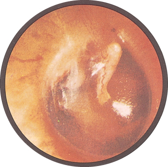
4.5 · What you find in the canal and on the drum
In the canal. Cerumen, and foreign bodies — the deck's list is Q-tips, beads, pencil lead, styrofoam, crayons, popcorn and tympanostomy tubes, under the heading “if it fits…”.
| Finding | Appearance |
|---|---|
| Acute otitis externa | Canal swollen, narrow, moist, pale, TENDER; may be erythematous |
| Chronic otitis externa | Canal skin thickened, red, ITCHY |
| Perforation | Central — does not extend to the margin. Marginal — involves the margin. Usually secondary to otitis media, and there may be drainage through it |
| Tympanosclerosis | Hyaline deposit in the membrane, after severe otitis media or a healed perforation, including grommet sites. Usually not clinically significant |
| Serous effusion | Amber fluid, sometimes with bubbles. Follows an upper respiratory infection or a change in atmospheric pressure |
| Otitis media | Red, landmarks LOST, BULGING, with purulent effusion. Streptococcus pneumoniae and Haemophilus influenzae |
| Bullous myringitis | Painful haemorrhagic vesicles on the membrane or canal. May be viral or bacterial |
Acute against chronic otitis externa is pain against itch, and swelling against thickening. The distinction is easier from the history than from the picture.
Bulging is graded, not binary. The deck carries a four-panel series, and the useful thing about it is the middle two — a mildly bulging drum still has landmarks you can pick out, and the point at which they disappear is the point the effusion has become convincing.
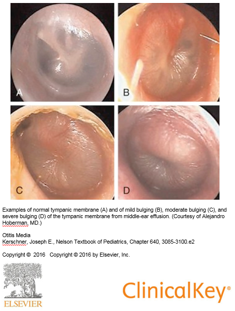
4.6 · Hearing screening and the tuning fork tests
Whispered voice test. Stand two feet BEHIND the patient — which removes lip reading — occlude the ear not being tested, and whisper a three number or letter sequence twice. Normal is three or more of six correct; abnormal is four of six incorrect. The other bedside screens are finger rub and a watch.
| Conductive loss | Sensorineural loss | |
|---|---|---|
| Pathophysiology | External or middle ear disorder impairs conduction to the inner ear. Foreign body, otitis media, perforation, otosclerosis of the ossicles | Inner ear disorder involving the cochlear nerve and impulse transmission to the brain. Loud noise, inner ear infection, trauma, acoustic neuroma, congenital and familial disorders, ageing |
| Usual age of onset | Childhood and young adulthood, up to about 40 | Middle or later years |
| Canal and drum | Abnormality usually VISIBLE — except in otosclerosis | Problem not visible |
| Effect on sound | Little effect. Hearing seems to improve in a noisy environment. Voice remains SOFT, because the inner ear and cochlear nerve are intact | Higher registers lost, so sound may be distorted. Hearing worsens in noise. Voice may be LOUD, because hearing is difficult |
| WEBER (fork at vertex) | Lateralises to the IMPAIRED ear — room noise is not well heard, so detection of vibration improves | Lateralises to the GOOD ear — damage impairs transmission on the affected side |
| RINNE (meatus, then mastoid) | Bone ≥ air. Vibration through bone bypasses the blocked external or middle ear to reach the cochlea | Air > bone. The damaged cochlea or nerve transmits poorly however the vibration arrives, so the normal pattern prevails |
Voice volume is a feedback loop, and it is the bedside sign people forget. A patient who cannot hear themselves speaks up; a patient whose cochlea is intact hears their own voice by bone conduction perfectly well and has no reason to.
The Rinne result in sensorineural loss is the counterintuitive one. Rinne compares two routes to the same cochlea. Damage the cochlea and both routes degrade together, so the ratio between them is unchanged — a “normal” Rinne in an ear that hears badly. That is not a failure of the test; it is the test working.
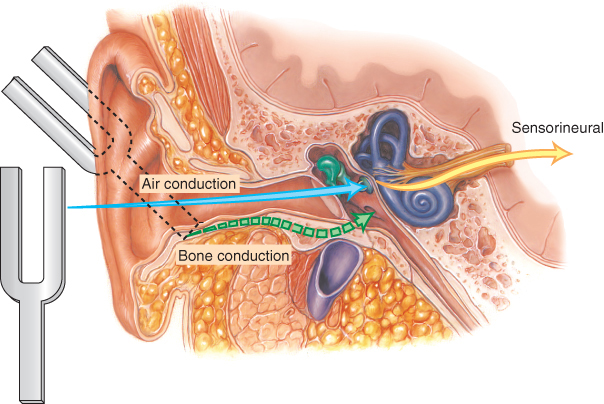
Rinne on the right: heard better in the air — normal. Weber: heard better in the right ear. Which ear has sensorineural loss?
The LEFT. The normal Rinne rules out a conductive problem on the right, and Weber lateralises away from a sensorineural lesion — so hearing it on the right puts the damage on the left.
What the tuning forks CANNOT do, which is on the slide and easy to skip: they do not distinguish normal from bilateral sensorineural loss, and they do not distinguish normal from mixed conductive and sensorineural loss. Both tests work by comparing — one side against the other, or one route against the other. A loss that is symmetrical, or that hits both routes, leaves the comparison looking normal.
4.7 · The nose and sinuses
Anatomy first, because the drainage explains the disease [0:16]. Three turbinates — superior, middle and inferior — and the maxillary sinus drains at the middle turbinate. The Eustachian tube opens into the same space, which is why “everything comes together, ear, nose and throat … that’s why when you cry you get congestion.”
And the warning that goes with it [0:46]: “the roof of the mouth is the floor of your brain … anything that happened there can go up. So you have to be careful. Any infection in this area, you have to be a little more aggressive.”
History: onset and duration, sick contacts and recent travel, recent dental work — because dental work can affect the maxillary sinuses sitting directly above the upper tooth roots — and seasonal or environmental triggers pointing to allergic rhinitis. Facial pain or tenderness points to sinusitis. Ask about medications: duration, efficacy, and specifically rhinitis medicamentosa and cocaine. Ask whether the sense of smell is affected.
Epistaxis is caused by digital trauma or other trauma, inflammation, dry mucosa, foreign body, or tumour. Recurrent bleeding, or bleeding and bruising elsewhere, suggests a systemic problem — one nosebleed is local until a pattern says otherwise.
| Examination step | What you are looking for |
|---|---|
| Patency | Occlude one nostril and breathe in. UNILATERAL obstruction → foreign body, tumour, deviated septum |
| Masses | Polyps — associated with allergic rhinitis, aspirin sensitivity, asthma, chronic sinus infection, cystic fibrosis. Also cysts and tumours |
| Symmetry and deformity | Deviated septum, perforated septum, trauma |
| Discharge | Thick and purulent, thin and watery, or bloody. Note odour |
| Mucosa | Colour, swelling, bleeding, ulceration. Red and swollen → VIRAL. Pale, bluish or red → ALLERGIC |
| Septum | Perforation — from trauma, surgery or drug use |
| Palpation | Press UP on the frontal sinuses avoiding the eyes; press UP on the maxillary sinuses |
| Transillumination | Dark room. Frontal: light up under the brow close to the nose. Maxillary: light down just below the inner corner of the eye, mouth open. Absence of glow → thickened mucosa or secretions. NOT sensitive or specific |
Do not pull what you have not identified. He told a story against the nose examination [6:05]: a lesion everyone had called a polyp, which imaging showed to be brain tissue coming through. “You need to know what you’re looking at before you start pulling things. If you’re not sure, you’ve got to be careful.”
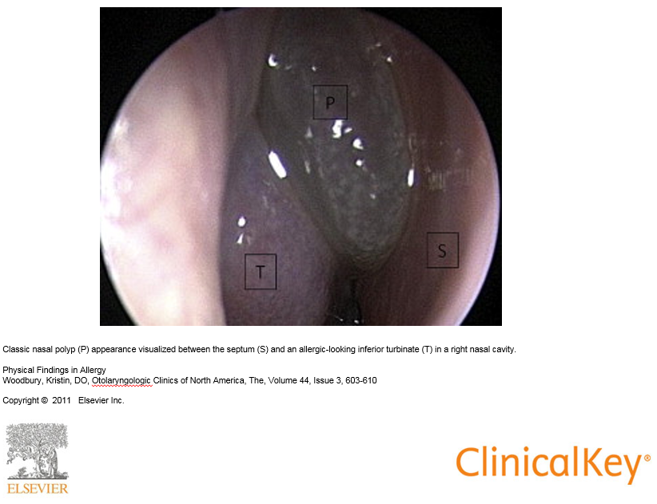
Acute sinusitis — three statements, and the second is the one people get wrong.
- Local tenderness, pain, fever and nasal discharge are suggestive, and purulent discharge is suggestive.
- The COLOUR of the discharge is NOT diagnostic. He went further aloud [10:33]: purulent discharge “doesn’t need to be there … it’s not diagnostic”.
- Acute BACTERIAL sinusitis is unlikely with symptoms under seven days — “less than seven days, it’s not. It takes time to let it cook.”
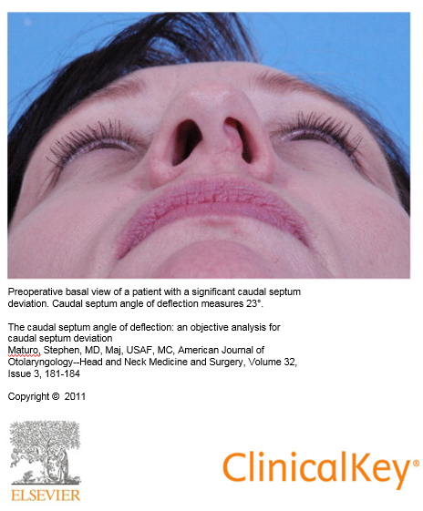
Septal haematoma is the nose finding that cannot wait. Injury disrupts the vessels and pulls the lining away from the cartilage, so blood collects between the two. It requires urgent drainage to prevent necrosis of the septal cartilage — the cartilage has no blood supply of its own and depends entirely on the lining that has just been stripped off it. His rule was broader than the nose [11:36]: “any time you have a septal haematoma — anywhere, in an ear, in the nose, whatever — that blood has to come out.”
A deviated septum may be entirely asymptomatic; he demonstrated pressing on an obvious external deviation with no obstruction behind it. What matters is airflow, not appearance.
4.8 · The oral cavity
Anatomy, named in order [13:10]: medial incisor, lateral incisor, canine, premolars, molars; then the hard palate, the soft palate and uvula, the tonsils between the anterior and posterior pillars, the pharynx behind, and the buccal mucosa.
History: sore throat — and here the Centor rule enters. Also sore tongue (aphthous ulcers; nutritional deficiency if sore AND smooth), bleeding gums (gingivitis), hoarseness (viral laryngitis, overuse, laryngeal nerve damage, reflux, smoking), swollen glands or lumps in the neck, and tobacco and alcohol use.
The four Centor criteria, one point each:
- Fever — temperature above 100.4°F (38°C)
- Tonsillar exudates or swelling
- Swollen and tender anterior cervical nodes
- ABSENCE of cough
Three are things present and one is a thing absent, which is the half people misremember. A cough points toward a viral cause, so its absence is what scores.
The MODIFIED score adds age, and this lives only inside the slide's picture — the slide text is a single caption line, so a text-only reading of the deck loses it entirely:
| Age | Points |
|---|---|
| 3 to 14 years | +1 |
| 15 to 44 years | 0 |
| 45 years and older | −1 |
The score maps to a risk of group A beta-haemolytic streptococcal pharyngitis: score ≤0 → 1–2.5%; 1 → 5–10%; 2 → 11–17%; 3 → 28–35%; ≥4 → 51–53%. A score of 0 or less needs no further testing or antibiotics; the middle of the range goes to throat culture or rapid antigen detection; and ≥4 is where empiric treatment is considered.
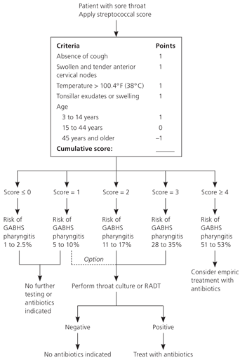
| Structure | What to inspect, and what it means |
|---|---|
| Lips | Colour, texture, cracks, sores. Angular cheilitis at the corners; angioedema; herpes simplex |
| Mucosa, tonsils, pharynx | Erythema, exudates, ulcerations, lesions. The posterior pharynx may need a tongue blade |
| Uvula and soft palate | Failure to rise with deviation of the uvula to the OPPOSITE side → cranial nerve X paralysis |
| Dentition | Caries, erosions. Look UNDER dentures for ulcers and lesions |
| Tongue | Texture, colour, lesions. Smooth, beefy red → vitamin B12 deficiency. Cancers: lateral border or undersurface, indurated red or white, males over 50. Geographic tongue is benign. Asymmetric protrusion → cranial nerve XII lesion |
| Palpation | Floor of mouth; then the tongue — hold it with gauze in one hand and palpate with the other, then SWITCH HANDS for the opposite side |
Switching hands is not fussiness, it is the only way to reach both lateral borders properly — and the lateral border and undersurface are exactly where the cancers are.
Pharyngitis: streptococcal gives erythematous tonsils, often with exudate. Candidal pharyngitis is its own picture. Necrotising ulcerative gingivitis — Vincent's angina, trench mouth — he described from the door [23:43]: “those people open their mouth back there and you can smell them over here, that’s how bad it is … the bacteria keep growing and it’s actually destroying tissue as it goes.” From poor dental hygiene, and drug use. Aphthous ulcers and torus palatinus — a benign midline bony growth on the hard palate — round out the findings.
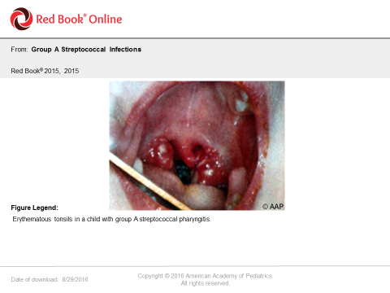
4.9 · The neck, the thyroid and the head
The node chains, in the order to palpate them: preauricular, postauricular, occipital, tonsillar, submandibular, submental, superficial (anterior) cervical, posterior cervical, deep cervical, supraclavicular. Use the pads of the index and middle fingers. Following a fixed route is what stops one being missed — and on the practical, each one has to be named as it is palpated.
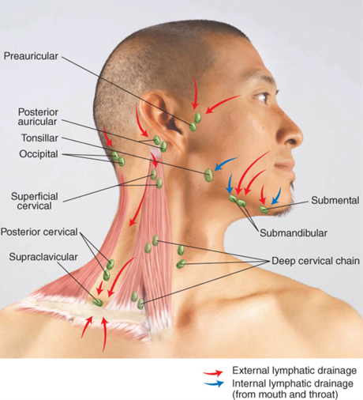
| Node finding | What it means |
|---|---|
| Round or ovoid, smooth, mobile, non-tender | Normal |
| Tender | Inflammation |
| Hard or fixed | Malignancy |
| Enlarged supraclavicular node on the LEFT | Metastasis from an abdominal or thoracic malignancy |
| Generalised | Human immunodeficiency virus, Epstein-Barr virus, lymphoma, leukaemia, sarcoidosis |
The left supraclavicular node is the one worth knowing cold: it drains territory a long way from the neck, so finding one there redirects the entire search.
Submandibular swelling and erythema — Ludwig's angina, a cellulitis of the floor of the mouth. Life threatening, and the reason is the AIRWAY.
He walked it through [28:16]: “that’s an emergency — basically an infection of the mouth, usually the lower, from teeth or something that went down. You’ve got the floor of the mouth, infection is right here, now it’s spreading this way and it spreads fast … it cannot stay in the body, it has to come out … life-threatening, airway. I saw a couple of those in the emergency room — you can see it spreading, you can see it moving, you have to work with it quickly.”
The trachea is checked for deviation — masses, atelectasis, or a large pneumothorax.
The thyroid, found from the cricoid cartilage as the landmark [26:43], and the three-way split on diffuse enlargement turns on texture alone:
| Finding | Suggests |
|---|---|
| Diffuse and SOFT | Graves disease |
| Diffuse and FIRM | Hashimoto thyroiditis |
| Diffuse and TENDER | Thyroiditis |
| Endemic goitre | Iodine deficiency |
| Single nodule | Cyst or tumour |
| Multinodular enlargement | Metabolic process; risk of malignancy with a family history |
The head. History is OPPQRST again, and the headache patterns matter: migraine and tension are EPISODIC; migraine and cluster are UNILATERAL — migraine is in both lists, so the two features have to be read together. Sudden and severe → subarachnoid haemorrhage. New, progressive and persistent → mass. Also consider meningitis.
On examination: facial swelling or characteristic facies; lumps, rashes, hair loss, lesions, scars; lice; fine hair → hyperthyroidism, coarse hair → hypothyroidism; seborrhoeic dermatitis, psoriasis, atypical naevi, actinic keratosis; symmetry, involuntary movements, oedema; tenderness and integrity; and size — enlarged in hydrocephalus and Paget disease, small in microcephaly.
One gap, named rather than hidden. The deck declares Bates tables 7-1, 7-2, 7-4 and 7-19 through 7-26 testable, along with the material in the reading assignments. Those are a textbook, and nothing in this guide is invented from them — everything here comes from the slides or the recording. Where the deck reproduces a Bates table on its own slide, as it does for the vertigo comparison and the hearing loss summary, that content is above in full. For the rest, the tables are worth opening directly: 7-19 covers lumps on or near the ear, 7-22 the lips, 7-23 the mouth and pharynx, 7-25 the tongue, and 7-26 the thyroid.